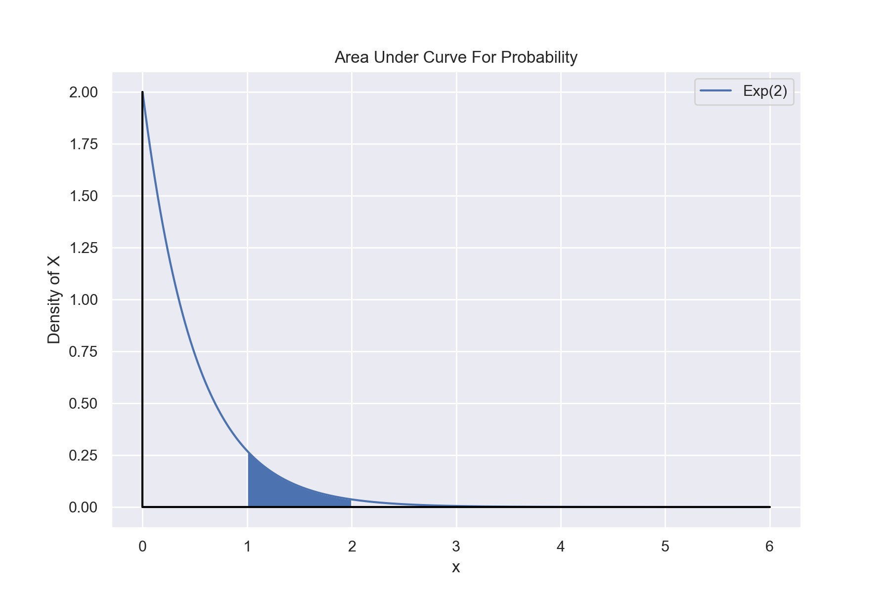

Probability, Statistics, and Entropy
Probability
Defining terms
Before we show any equations, we must define some terms. Let A and B be events.
We will also denote \(\Omega\) to be the set of all possible outcomes.
- P(A) is the probability of event A occurring
- \(P(A\cup B)\) is the probability of A or B or both occurring. The \(\lor\) can also be seen instead of \(\cup\)
- \(P(A\cap B)\) is the probability of A and B both occurring. The \(\land\) can also be seen instead of \(\cap\)
- \(P(\neg A)\) is the probability of A not occurring. This can also be written as a bar above the A
Basic Rules
The sum of the probabilities of all possible outcomes must equal 1. For discrete distributions this can be stated as
$$\sum P(x_i)=1$$
and for continuous distributions, we can write
$$\int_{-\infty}^{\infty}p(x)dx=1$$
Inclusion-Exclussion Principle
$$P(A\cup B)=P(A)+P(B)-P(A\cap B)$$
The Inclusion-Exclussion Principle gives a relationship between two events, the probability of both happening, and the probability of either happening. This essentially makes sure we don't double count as \(A\cap B\) is included as an outcome in P(A) and P(B).
De Morgan's Laws
De Morgan's laws describe how negation interactions with grouping of events. The statements can be rather formal, but verbally seem obvious.
"If neither A nor B happened, then that means A didn't happen and B didn't happen"
$$\neg(A \lor B)=(\neg A)\land (\neg B)$$
"If A and B didn't both happen, then that means either A didn't happen, B didn't happen, or neither happened"
$$\neg(A \land B)=(\neg A)\lor (\neg B)$$
Cumulative Density Function
The cumulative density function states the probability of getting the outcome being less than or equal to a given x.
We will define a
Cumulative Density Function (CDF) formally as
$$F(x)=P(X\leq x)$$
where X is the value of the random variable and x is a chosen value or cutoff point of interest.
For discrete variables, we can formulate this as
$$F(x)=\sum_{x_i\leq x}p(x_i)$$
where \(x_i\) is a possible value that X takes. We will call the function p(x) the
probability mass function (PMF) for discrete variables.
Example with Binomial Distribution
Python code:
def combinations(n,k):
return math.factorial(n)\
/(math.factorial(k)*math.factorial(n-k))
def binomial_PMF(k,n,p):
return combinations(n,k)*(p**k)*(1-p)**(n-k)
def binomial_CDF(k,n,p):
accum = 0
for i in range(0,k+1):
accum += binomial_PMF(i,n,p)
return accum
n = 8
x_values = [i for i in range(0,n+1)]
p = 0.6
fig = plt.figure()
plt.scatter(x_values,
[binomial_PMF(k,n,p) for k in x_values])
plt.scatter(x_values,
[binomial_CDF(k,n,p) for k in x_values],
color='orange')
plt.legend(['PMF: $P(X=x_i)$','CDF: $P(X\leq x_i)$'])
plt.title("PMF and CDF for Binomial (p=0.6, n=8)")
plt.xlabel('k (number successes)')
plt.ylabel('Probability')
plt.show()
For continuous variables, we have
$$F(x)=\int_{-\infty}^xf(y)dy$$
where f(y) is the probability density at y. We can think of this as the probability of We will call the density function f(y) the
probability density function (PDF) for continuous variables as opposed to PMF.
We can consequently calculate the probability of being between two values as follows:
$$P(a\lt X\leq b) = F(b)-F(a)$$
Which also means
$$P(a \lt X \leq b)=\int_{a}^bf(y)dy$$
Another common definition is that of the
survival function. We define this as
$$\bar{F}(x)=1-F(x)$$
Thus the survival function is also equivalent to
$$\bar{F}(x)=P(X\gt x)$$
Example
Let X be an exponentially distributed variable with \(\lambda=2\), with the following density:
$$f(x)= \begin{cases}
2\exp(-2x) & x\geq 0 \\
0 & x \lt 0
\end{cases}$$
The probability that \(1\lt X \leq 2\) is given by
$$P(1\lt X \leq 2)=F(2)-F(1)$$
$$=\int_1^2 2\exp(-2x)dx$$

Python code:
lam = 2
def pdf_exp(x,lam):
return np.where(x>=0, lam*np.exp(-lam*x),0)
x_values = np.linspace(0,6,1000)
plt.figure(figsize=(9,6))
plt.plot(x_values, pdf_exp(x_values,lam))
fill_x_values = np.linspace(1,2,300)
plt.fill_between(fill_x_values,pdf_exp(fill_x_values,lam))
plt.plot([0, 0], [0, 2], color='black')
plt.plot([0,6],[0,0],color='black')
plt.xlabel('x')
plt.ylabel('Density of X')
plt.title("Area Under Curve For Probability")
plt.legend(['Exp(2)'])
plt.show()
Conditional Probability
Let A and B be two events. We denote the conditional probability of A occurring given B having occurred as \(P(A|B)\)
This is defined mathematically as:
$$P(A|B)\equiv \frac{P(A \cap B)}{P(B)}$$
where \(P(A\cap B)\) is the probability of both A and B occurring.
Bayes' Theorem
Bayes' Theorem relates two events and the conditional probabilities of one upon another.
Let A and B two events with non-zero probabilities
$$P(A|B)=\frac{P(B|A)P(A)}{P(B)}$$
Expected Value and Variance
Given a probability distribution, what properties can we discern?
Let E[f(X)] denote the "Expected value," which can be thought of as the density-weighted mean, for a function f(x) on a distribution X.
We can calculate this as
$$E[f(X)]=\sum_{x_i}f(x)\times p(X=x_i)$$
or in the continuous case
$$E[f(X)]=\int_{-\infty}^{\infty}f(x)p(x)dx$$
If we wanted to calculate the mean of a distribution, we can use f(X)=x and calculate the expectation.
$$E[X]=\int_{-\infty}^{\infty}xp(x)dx$$
Another common statistic that is used to describe a distribution is the variance, which is a measure of deviation from the mean.
$$\text{Var}(X)=E[X^2]-(E[X])^2$$
We can calculate this by separately calculating the expectations for \(E[X^2]\) and E[X]. The standard deviation is the square root of the variance.
Example
The Bernoulli Distribution is given by
$$P(X=1)=p$$
$$P(X=0)=1-p$$
Calculate the mean and variance of the distribution.
$$E[X]=\sum x_i p(x_i)$$
$$=1\times p + 0 \times (1-p)$$
$$=p$$
$$E[X^2] = \sum x_i^2 p(x_i)$$
$$=1^2 \times p + 0^2 \times (1-p)$$
$$=p$$
$$\text{Var}(X)=E[X^2]-(E[X])^2$$
$$=p-p^2$$
$$p(1-p)$$
Multivariate Distributions
A distribution can output a set of random variables.
$$F(x_1,\dots,x_n)=P(X_1\leq x_i,\dots,X_n\leq x_n)$$
We say that \(X_1,\dots,X_n\) are independent if
$$F(x_1,\dots,x_n)=\prod_{x_i}P(X_i\leq x_i)$$
We can use the notation
$$F_{X_i}(x_i)\equiv P(X_i\leq x_i)$$
We can define the density of a multivariate distribution as
$$f(x_1,\dots,x_n)\equiv\frac{\partial^n}{\partial_1\cdots\partial_n}F(x_1,\dots,x_n)$$
We can also define a function called the marginal density. Let us consider a bivariate distribution given by \(x_1\) and \(x_2\).
$$F_{X_1}(x_1)=\int_{-\infty}^{\infty}f(x_1,x_2)dx_2$$
Using the marginal densities, we can arrive at an alternative definition of independence. Two random variables are independent if
$$f(x_1,x_2)=f_{X_1}(x_1)f_{X_2}(x_2)\forall(x_1,x_2)$$
Let us define the conditional distribution of \(X_1\) given \(X_2=x_2\)
$$F_{X_1|X_2}(x_1|X_2)\equiv P(X_1\leq x_1|X_2=x_2)$$
The marginal density is more useful in practice
$$f_{X_1|X_2}(x_1|x_2)=\frac{\partial}{\partial x_1}F_{X_1|X_2}(x_1|x_2)=\frac{f(x_1,x_2)}{f_{X_2}(x_2)}$$
Equivalently,
$$f(x_1,x_2)=f_{X_1|X_2}(x_1|x_2)f_{X_2}(x_2)$$
Covariance and Correlation
How do we quantify how two variables co-move?
Let us define the Covariance between \(X_1\) and \(X_2\) as
$$\text{Cov}(X_1,X_2)=E[X_1X_2]-E[X_1]E[X_2]$$
The special case of the covariance of a random variable with itself is equal to the variance.
We can normalize this into the
Pearson correlation (often just called correlation) as follows:
$$\rho(X_1,X_2)=\frac{\text{Cov}(X_1,X_2)}{\sqrt{\text{Var}[X_1]\text{Var}[X_2]}}$$
What must be emphasized is that a correlation of 0 does not mean that two variables are independent.
A correlation of 0 is a
necessary but not sufficient condition. For example, take a random variable that is distributed like \(X\sim N(0,1)\) and another variable Y=abs(X). The correlation is 0, but they are not independent.
Also, Pearson correlation only captures linear behavior between two variables. Another metric for monotonic behaviour between two random variables is
Spearman correlation. Kendall's tau coefficient is a third way.
Entropy
Multiplicity
If we flip a coin twice, the most likely outcome for the number of heads we get is 1.
How is this possible if the coins are fair and independent? The answer has to do with that there are two possible sequences which will give you 1 head, TH and HT, while there are only 1 sequence each for 0 heads and 2 heads.
We will call this phenomenon of their being different number of sequences for each outcome "multiplicity."
To further use the coin analogy, we will call the specific sequence the
microstate and the total number of heads to be the
state or
macrostate.
Each microstate is equally likely, but there are 2 microstates that correspond to the 1 heads macrostate.
Given M coin flips, the number of ways to get N heads would be given as:
$$W=\frac{M!}{N!(M-N)!}$$
However, this restricts us to only 2 outcomes. What if we require more?
A generalized multiplicity formula for arranging Z types of things in M spaces is
$$W=\frac{M!}{\prod N_{i}!}=\frac{M!}{N_{1}!*N_{2}!*...*N_{Z}!}$$
If there are only two possible types and M total and N of type 1, then \(N_2=M-N\) and it reduces to
$$W=\frac{M!}{N!(M-N)!}$$
Definitions of Entropy
Entropy is typically described as being a measure of "disorder," but how does that manifest?
With words, we can describe entropy for now as a measure of how mixed a system is or how many microstates a given macrostate has.
There are 3 main formulas that we will be considering:
$$S=k_B\ln(W)$$
$$S=-k_B\sum p\ln(p)$$
$$dS=\frac{dq}{T}$$
These will be called the statistical definition, the probabilistic definition, and thermodynamic definition respectively.
Extensive and Intensive Properties
A property of a system is said to be
extensive if it is proportional to the size of the system. One example is mass; if the system is 1L of water, going to 2L of water will double the mass. These properties are often not ratios and can often be intuited via thought experiment.
A property of a system is said to be
intensive if it remains constant when a system is scaled. Density is an example of an intensive property. In the previous example, the density of the system does not change when you go from 1L of water to 2L of water. Mass and volume of the system both double, which cancel out when you take the ratio to get density.
Some properties are neither extensive not intensive if they scale but in a non-linear proportional way.
The most notable example is multiplicity. This can be shown if every number in the above calculation is doubled due to the factorial operator.
Entropy at large scales behaves like an extensive property, but at very small scales, this does not always hold.
Normal Distribution
Also called a Gaussian or Bell-curve, the Normal distribution is an essential distribution to know.
It is parameterized by two values:
- The mean, \(\mu\), which states the center of the distribution
- The variance, \(\sigma^2\), which describes the width of the distribution
Some conventions will parameterize it using the standard deviation rather than its variance.
These are equivalent as the standard deviation is the square root of the variance and there is a 1-to-1 mapping.
In this book, we will use the following notation to state that a variable X is distributed normally with mean, \(\mu\) and variance \(\sigma^2\):
$$X\sim N(\mu,\sigma^2)$$
Again, in some sources, the second parameter will be the standard deviation instead, but in this text, it will always be the variance unless stated otherwise.
This is a continuous probability distribution whose density is given by
$$f(x)=\frac{1}{\sqrt{2\pi \sigma^2}}e^{-\frac{1}{2}(\frac{x-\mu}{\sigma})^2}$$
If the normal distribution has parameters \(\mu=0\) and \(\sigma^2=1\) then we refer to it as a
standard normal distribution.
Properties
- Has non-zero probability density everywhere
- Symmetric
- Antiderivative does not have a closed-form
Law of Large Numbers
Central Limit Theorem